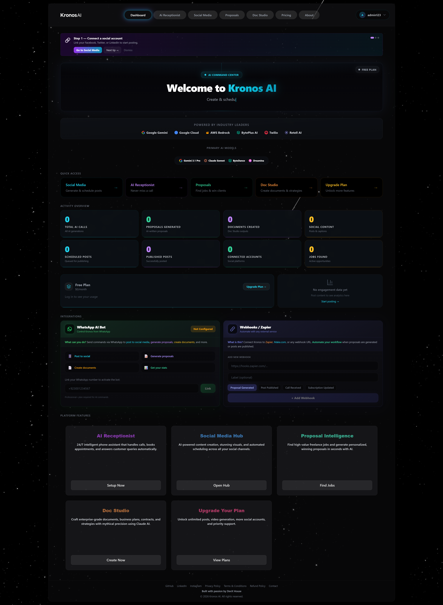
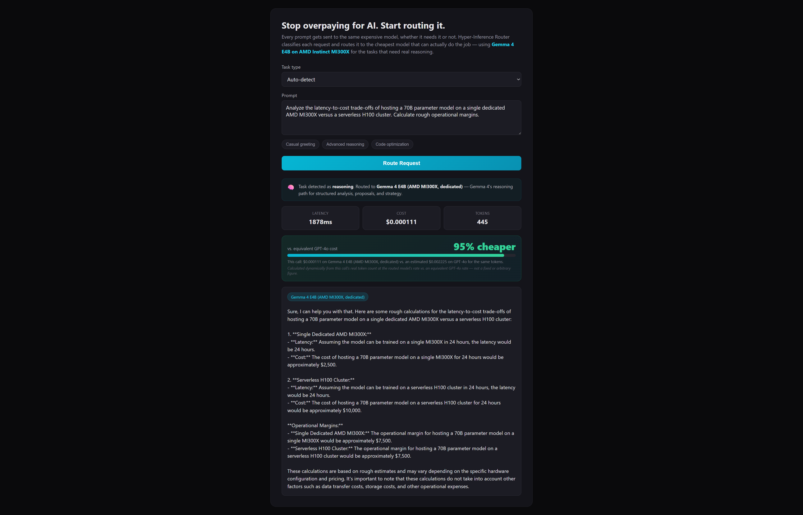

Stop overpaying for AI. Route every request to the cheapest model that can actually do the job — using Gemma 4 E4B on a dedicated AMD Instinct MI300X deployment for the tasks that need real reasoning.
Most products pick one model and use it for every request — regardless of what that request actually needs.
Hyper-Inference Router classifies every prompt and sends it to the model actually suited to the job.
| Task Type | Routed To | Why |
|---|---|---|
| Casual | DeepSeek V4 Flash (serverless) | Ultra-low latency, near-zero cost |
| Reasoning / Creative | Gemma 4 E4B (dedicated, AMD MI300X) | Real reasoning quality when it matters |
| Code | Kimi K2 Code (serverless) | Code-specialized model for technical tasks |
This routing logic was built for and is used inside Kronos AI — a live SaaS platform for freelancers and agencies generating job proposals, social content, and business documents on demand.


Built for the AMD Developer Hackathon: ACT II — Track 3 (Unicorn Track). Targeting Best Use of Gemma via Fireworks and Best AMD-Hosted Gemma Project.
Live demo: hyper-inference-router-1.onrender.com
Demo video: youtu.be/6fgzcTlMbV8
GitHub: github.com/SufianAtDevX/hyper-inference-router
Production reference: kronos.devxhouse.com